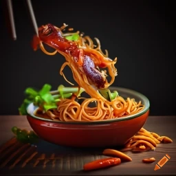

Nebula Noodle Stir-fry

Description
Embark on an extraordinary culinary voyage with the mesmerizing "Nebula
Noodle Stir-Fry." This celestial creation transports your taste buds to
the far reaches of the cosmos, where flavors mingle and dance amidst a
tapestry of cosmic wonders. Lunar moth larvae, Venusian beetle grubs, and
Martian land shrimp take center stage, infusing the dish with an
otherworldly essence that defies earthly conventions.
As you take your first bite, the intergalactic symphony of flavors
unfolds. A celestial sauce, crafted with asteroid dust, cosmic soy sauce,
meteoric oyster sauce, and interdimensional tamarind paste, imbues the
dish with an intoxicating balance of tanginess and umami. Each mouthful
reveals the gentle crunch of comet pepper slices, the celestial sweetness
of meteorite carrot julienne, and the subtle piquancy of celestial onion.
Fragrant stellar basil leaves and fiery gamma ray chili peppers create a
cosmic symphony of aromatic notes and a tantalizing spice that dances on
your palate. Topped with a sprinkle of stardust, this Nebula Noodle
Stir-Fry offers an intergalactic gustatory experience that transports you
beyond the boundaries of ordinary gastronomy, unlocking a universe of
flavors that is truly out of this world.
Ingredients
- 200 grams lunar moth larvae (cleaned and blanched)
- 150 grams Venusian beetle grubs (rinsed and drained)
- 1 cup Martian land shrimp (thawed if frozen)
- 2 tablespoons asteroid dust sauce
- 1 tablespoon cosmic soy sauce
- 1 tablespoon meteoric oyster sauce
- 1 tablespoon intergalactic tamarind paste
- 2 tablespoons interstellar vegetable oil
- 2 cloves alien garlic (minced)
- 1 pulsar-sized piece of interdimensional ginger (grated)
- 1 comet pepper (sliced)
- 1 medium-sized meteorite carrot (julienned)
- 1 celestial onion (sliced)
- 1 cup stellar basil leaves
- 2 gamma ray chili peppers (sliced)
- Stardust, for garnish
Steps
-
In a small bowl, combine the asteroid dust sauce, cosmic soy sauce,
meteoric oyster sauce, and intergalactic tamarind paste. Stir well to
create a celestial sauce.
-
Heat the interstellar vegetable oil in a spacecraft-like wok or large
skillet over medium-high heat. Add the minced alien garlic and grated
interdimensional ginger. Sauté for about 30 seconds until their cosmic
aroma fills the air.
-
Add the lunar moth larvae, Venusian beetle grubs, and Martian land
shrimp to the wok. Stir-fry for 2-3 minutes until they are cooked
through and the flavors meld together. These extraterrestrial
ingredients will provide a truly out-of-this-world experience.
-
Introduce the comet pepper, meteorite carrot, and celestial onion to the
wok. Continue stir-frying for another 3-4 minutes until the vegetables
are slightly tender but still maintain their otherworldly crispness.
-
Pour the celestial sauce mixture over the stir-fry and toss everything
together, ensuring that the intergalactic critters and vegetables are
thoroughly coated. Cook for an additional 2 minutes to allow the flavors
to harmonize.
-
Remove the wok from the heat and add the stellar basil leaves and sliced
gamma ray chili peppers. Gently toss the stir-fry, allowing the fresh
herbs and fiery peppers to infuse their extraterrestrial essence.
-
Transfer the Nebula Noodle Stir-Fry to a serving dish and garnish with a
sprinkle of stardust for a shimmering, otherworldly touch.
-
Serve this celestial creation with noodles of your choice, such as rice
noodles or udon, for a cosmically satisfying meal that will transport
your taste buds to galaxies far, far away.